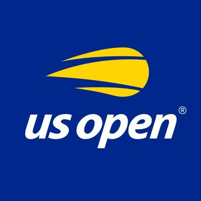

The US Open Tennis Championships is a hardcourt tennis tournament. Since 1987, the US Open has been chronologically the fourth and final Grand Slam tournament of the year. The other three, in chronological order, are the Australian Open, French Open and Wimbledon. The US Open starts on the last Monday of August and continues for two weeks, with the middle weekend coinciding with the US Labor Day holiday. The tournament is of one of the oldest tennis championships in the world, originally known as the U.S. National Championship, for which men's singles and men's doubles were first played in August 1881. The tournament consists of five primary championships: men's and women's singles, men's and women's doubles, and mixed doubles. The tournament also includes events for senior, junior, and wheelchair players. Since 1978, the tournament has been played on acrylic hardcourts at the USTA Billie Jean King National Tennis Center in Flushing Meadows–Corona Park, Queens, New York City. The US Open is owned and organized by the United States Tennis Association (USTA), a non-profit organization, and the chairperson of the US Open is Patrick Galbraith. Revenue from ticket sales, sponsorships, and television contracts is used to develop tennis in the United States. The US Open employed standard tiebreakers (first to 7, win by 2) in every set of a singles match.[2] Now in all four Grand Slam events, when a match that reaches 6–6 in the last possible set (the third for women and the fifth for men) an extended tiebreaker to 10 points is played. The tournament was first held in August 1881 on grass courts at the Newport Casino in Newport, Rhode Island. That year, only clubs that were members of the United States National Lawn Tennis Association (USNLTA) were permitted to enter.[3] Richard Sears won the men's singles at this tournament, which was the first of his seven consecutive singles titles.[4] From 1884 through 1911, the tournament used a challenge system whereby the defending champion automatically qualified for the next year's final, where he would play the winner of the all-comers tournament. In the first years of the U.S. National Championship, only men competed and the tournament was known as the U.S. National Singles Championships for Men. In September 1887, six years after the men's nationals were first held, the first U.S. Women's National Singles Championship was held at the Philadelphia Cricket Club. The winner was 17-year-old Philadelphian Ellen Hansell. In that same year, the men's doubles event was played at the Orange Lawn Tennis Club in South Orange, New Jersey.[5] Semifinal at the 1890 U.S. Tennis Championships at Newport. Match between Oliver Campbell and Bob Huntington The women's tournament used a challenge system from 1888 through 1918, except in 1917. Between 1890 and 1906, sectional tournaments were held in the east and the west of the country to determine the best two doubles teams, which competed in a play-off for the right to compete against the defending champions in the challenge round.[6] The 1888 and the 1889 men's doubles events were played at the Staten Island Cricket Club in Livingston, Staten Island, New York.[7] In the 1893 Championship, the men's doubles event was played at the St. George Cricket Club in Chicago.[8][9][10] In 1892, the US Mixed Doubles Championship was introduced and in 1899 the US Women's National Doubles Championship. In 1915, the national championship was relocated to the West Side Tennis Club in Forest Hills, Queens, New York City. The effort to relocate it to New York City began as early as 1911 when a group of tennis players, headed by New Yorker Karl Behr, started working on it.[11] 